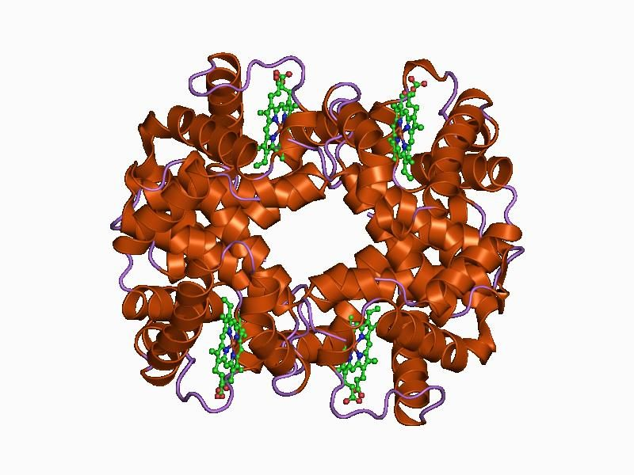
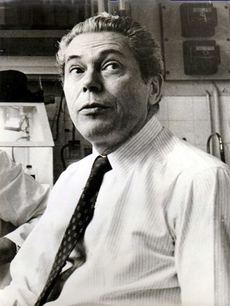
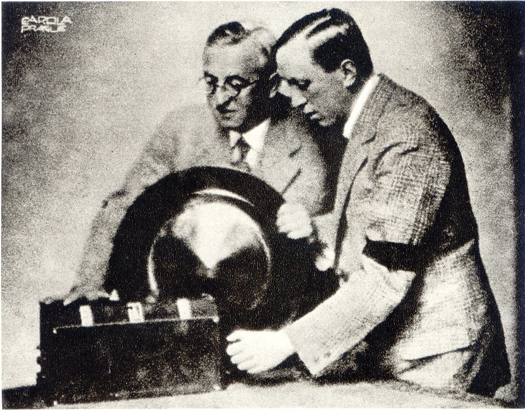

springing up, fully armed
… sudden springing up, fully armed, of …
一下子完整地冒出来
典故：希腊神话里雅典娜从宙斯头里出生时就披着全副盔甲。这里说复杂的东西不可能一出现就是成品。同一句的「或能创造生命的存在」多半是在暗指造物主。
第 2 章整章，全书论证的起点。上一章说要论证选择的单位是基因，这一章退回到生命出现之前，讲基因从哪里来：没有生命的原子怎样留下稳定的形状，原始汤里怎样冒出第一个会复制自己的分子，复制出的差错怎样让它分出品种、彼此竞争，最后给自己造出外壳。读的时候抓两条线：「稳定」这个词的意思在一章里悄悄变了一次；作者笔下的「想要」「发现」「斗争」为什么都加了引号。
第 1 章末尾，作者说要证明选择的基本单位是基因，「得从头讲起，从生命的起源讲起」。这一章就是那个「从头」：它不讲动物行为，讲的是基因的家谱。最后一段把复制因子和今天的基因接上，第 3 章开头一句就从「我们是生存机器」接着往下走。第 3 章第 3 段还会回头补一句：这一章为了简单，把 DNA 说得和最早的复制因子差不多，其实两者未必一样。
在没有生命的化学世界里，「被选择」是什么意思？一个分子怎样就有了后来叫作「自私」的那种处境？
读的时候带着这几个问题。不用先找答案，读完回来对照「检查一下理解」。
这一章是一个「先退一步，再往前推」的故事，讲法像一段从化学到生物的纪录片。§1 先从最没有生命的东西讲起：山、雨滴、盐晶，建立「稳定」这个词，然后立刻划界，说光靠它摇不出一个人。§2 跳进原始汤，用「想象」「假定」搭出一个会当模板的分子；这里是推测，作者自己打了招呼。这一节末尾（第 11 段）「稳定」悄悄换了意思，从「一块东西存在得久」变成「同一种东西的拷贝多」。§3 加一个条件：复制会出错，品种分化，三种稳定性由此而来。§4 开头突然插进一段「叫不叫它活的」，像离题，其实是在挡一个无谓的争论；接着才是竞争和外壳，最后一段把镜头一下拉到今天的你和我。
作者落在哪：从会复制自己的分子出发，靠抄错和竞争这两样，不需要任何目的或设计，就能一步步走到今天的生物；今天的复制因子叫基因，我们是它们的生存机器。
这一页是原书第 2 章的全部 4 节。原书各章没有小标题，粗体的节名是本站起的，下面是这一节第一段开头的几个词，在电子书里搜它就能跳过去。读完打个勾。
先把这一页用到、作者默认你懂的几个概念讲一遍。讲的是概念本身，作者拿它推出什么，读原书时自己看。上一页的选择单位，点进去看。
这是 Dawkins 自己的概括，不是教科书上的定律。意思很朴素：世界上能被我们看到、叫得出名字的东西，都是原子的某种相对稳定的组合。稳定有两种：一种是单个东西存在得够久（一座山），一种是同一类东西产生得够频繁（雨滴，每一滴都很短命）。不稳定的组合很快散掉，于是留下来的看上去像是被「挑」过。这种「挑」没有遗传：一颗盐晶长成立方体，不会让下一颗盐晶更像立方体。打个比方：服务器上留下来的进程，都是没崩溃的进程，这谈不上有谁在优化它们。
在这一页：第 2 段提出，第 4 段说最早的自然选择就是这样的「留稳弃散」，第 5 段划界：靠它造不出复杂的生物。
生命起源研究里的老说法，1920 年代由 Oparin 和 Haldane 各自提出：早期地球的海水里溶着大量从简单气体变来的有机小分子，像一锅稀汤，生命就从这锅汤里起步。它的前提是当时没有生物，有机分子不会被吃掉，可以慢慢积累。这是一种设想，不是观测到的事：今天对早期大气是什么成分、汤有多浓，都还有争论（见「对照今天」）。第 3 章作者会说，基因库对今天的基因所起的作用，就像原始汤对最早的复制因子（他加了保留），那是借这个词打比方。
在这一页：第 7 段讲实验室怎样模拟它，第 8 段给出年代（约三四十亿年前），第 9 段起复制因子在这锅汤里出现。
任何能让自己被复制的东西。关键是「模板」：分子上的构件按一定顺序排着，周围游离的构件按它的顺序贴上去、连成一条新链，于是顺序被抄了一份。有两种抄法：一种是同类相吸，抄出来和原件一样；一种是配对相吸，先抄出一个「负片」，负片再抄回正片。DNA 用的是后一种。程序员可以想成一段会把自己的代码写进别处的程序：重要的是那串顺序，不是哪一块具体的内存。今天通行叫「复制子」。第 13 章作者会把它和「载体」分开讲（复制因子与载体）。
在这一页：第 9 段起名，第 10–11 段讲两种抄法，第 19 段说它们今天叫基因。
一群会复制的东西里，哪一种会变多，取决于三样：一个个体能存在多久（长寿），多快能抄出一份（生殖力），抄得准不准（精确性）。长寿和抄得快相比，抄得快的效果往往更猛，因为数量是成倍往上翻的。抄得准的好处不那么直观：抄错的那份不再算「同一种」，它和它往后的所有拷贝都离开了这个队伍。下图用本站自己的数算一笔账。
在这一页：第 13 段讲长寿，第 14 段讲生殖力和精确性，第 16 段把三样合起来，说这就是生物学家说的进化。第 3 章给基因下定义时还会用到它们。
全书最核心的比喻：生物的身体是复制因子为了让自己存续而造出来的「机器」或「载具」，从最早的一层保护膜，到细胞，到动物和人。第一版序言里作者说，这个词不是他的老师 Tinbergen 的原话，但很可能是。这个比喻把通常的主次倒了过来：我们习惯说「生物有基因」，这里说的是「基因造了生物，住在里面」。它是一个视角，不是说身体不重要，也不是说身体是基因有意设计的。程序员可以想成：程序（基因）要跑，就得先造出跑它的机器。
在这一页：第 18 段首次出现（原书斜体），第 19 段最后一句「我们是它们的生存机器」。第 3、4 章接着讲这台机器。
按在书里出现的顺序排，标题前是节号。只讲到读懂这一页需要的程度。

第 3 段的例子。成人的血红蛋白由四条链组成，两条各 141 个氨基酸、两条各 146 个，合起来正是书里说的 574 个。作者拿它说明一种比钻石复杂得多的稳定：同样顺序的链，每次都会折成同样的立体形状，像弹簧回到原位。他说这是个「现代」分子，只是借来说明原子会落进稳定的形状，并不是原始汤里的东西。
第 7 段说化学家把水、甲烷、氨等简单气体放进烧瓶，通上电火花模拟闪电，几周后瓶里出现氨基酸。书里没点名，指的是 Stanley Miller 1953 年在芝加哥大学 Harold Urey 实验室做的实验（常叫 Miller–Urey 实验）。书里接着说后来还造出了嘌呤和嘧啶，一般认为包括 Joan Oró 1960 年用氰化铵加热得到腺嘌呤的实验。这些实验后来怎样，见「对照今天」。
作者在注 5 里说，他挑原始汤这个版本只是为了讲解。另一个版本是 A. G. Cairns-Smith 的「黏土说」：最早的复制因子可能是会自我复制的黏土矿物晶体，有机分子后来才「篡位」（第 3 章第 3 段也提到）。第三个是德国化学家 Manfred Eigen 一派的理论，他们研究的是一组分子互相催化复制、构成循环（「超循环」）时怎样进化。
第 12 段讲抄写出错时顺手举了个例子：七十士译本（Septuagint）是公元前 3 世纪起陆续把希伯来文《圣经》译成希腊文的译本，《以赛亚书》里一个意思是「年轻女子」的词被译成了通常指「处女」的希腊词。有读者来信质问，作者在 1989 年的注 6 里详细回了一次（见下面的尾注一节）。本站照书里说，不评价信仰。

第 15 段，作者说「没有东西想要进化」，并说 Monod 在 Herbert Spencer 讲座里把这一点讲得很好，还引了他一句挖苦话：进化论有个怪处，人人都以为自己懂它。本站的读法：放在这里，这句挖苦正好对着前面那个「出错是进化的前提，选择却偏爱不出错」的悖论，自以为懂进化论的人容易在那里卡住。

第 19 段说基因住在「笨重的机器人」里，这句后来被当作作者是基因决定论者的证据。作者在注 7 里拿「机器人」这个词的来历回击：这个词出自捷克作家 Karel Čapek 1920 年的剧本《R.U.R.》，剧里的机器人最后有了人的感情，会恋爱。据 Čapek 自己说，词是哥哥 Josef 替他想的，来自捷克语里「劳役」的意思。注 7 还点名了 Rose、Kamin、Lewontin 1984 年的书 Not in Our Genes，说它把「创造了我们」误引成了「控制我们」。
按节排，每节前面是分节地图里的节名。标着「每个字都认识」的，是熟词生义、习语和反话，最容易读错。灰色的那几个字是原句里的位置，在电子书里搜它就能找到。
对着中译本（40 周年增订版）读的时候看这一节。下面是译本这几节和这一页尾注里会让人读错的地方：灰字是英文原文那一处的几个词，在英文电子书里搜它；方框里是译本的原句，在译本电子书里搜它。措辞别扭但意思没错的不收。全书的勘误汇总在译本勘误。
… in a more general way than …
译本：「我打算用更为通俗的语言阐明这个伟大的理论」
原文是要用比通常更一般、更宽的方式讲达尔文的理论，从进化开始之前讲起。下一段的「稳定者生存」就是这个推广。译成「通俗」，读者会以为作者只是换个浅白的讲法。
… permanent enough or common enough to deserve …
译本：「具有足够的稳定性或普遍性而被赋予这个名称」
原文的定义是：一团原子存在得够久，或者出现得够多，值得我们给它起一个名字（马特霍恩峰、雨滴）。permanent 是「持久」。译本把它译成「稳定性」，又说成被赋予「这个名称」，定义就绕成了圈。
… It had to happen by definition.
译本：「事物的发展只能是这样」
原文的意思是：稳定的留下、不稳定的散掉，这是按「稳定」的定义就成立的，没什么神秘。译本听起来像在说事物发展有定数，丢了「同义反复」这一层。
… but a man consists of over …
译本：「但一个人体内的原子多得不计其数」
原文给了数：一个人由超过 1027 个原子组成（a thousand million 再乘三个 million）。作者正是拿这个数和「几十个原子」对比，说明随便摇晃摇不出人。
… I shall give is necessarily speculative
译本：「我的叙述只能是纯理论的」
speculative 是「推测性的、带猜测的」。作者在打招呼：没人在场，下面的起源故事只能是猜的。「纯理论」容易读成一套严密的理论，正好把这个保留丢了。
… you would very likely win several jackpots.
译本：「说不定你会中上几次头等奖呢」
原文是 very likely，「很可能」。作者要说的是：时间够长，极不可能的事几乎一定会发生。「说不定」把这个论证的力气卸掉了。
… is not as difficult to imagine …
译本：「并不像我们原来想象的那样难得」
原文说：一个会复制自己的分子，没有乍听起来那么难以设想，接着用模板来说明它怎样工作。上一段刚说它极不可能出现，这里说的是机制不难理解，不是说它不稀罕。译成「难得」，两段就打架了。
… the modern equivalents of the first replicator
译本：「现代的第一个复制因子即DNA分子」
原文是「第一个复制因子在今天的对应物，也就是 DNA 分子」。DNA 是后来者，第 3 章第 3 段还说最早的复制因子可能和 DNA 完全不同。
… but even they occasionally make mistakes
译本：「然而，差错最终使进化成为可能」
这一句前面，原文还有半句：可即便是 DNA，也偶尔会出错。少了它，「然而」就没有着落，读者也看不出「使进化成为可能」的差错指的是 DNA 的差错。
… which would have been positively selected
译本：「复制因子肯定会选择的第三个特性」
原文是被动：复制因子的第三个特性，会受到选择的青睐。译本让复制因子去「选择」，主动和被动倒了，还加了原文没有的「肯定」。
… evolution may seem, in some vague sense
译本：「我们认为，总的说来」
原文是 although：虽然进化在某种含糊的意义上看起来像好事，可没有东西「想要」进化。译本用「我们认为」开头，让步成了作者的看法，这一段的重点就偏了。
… Evolution is something that happens, willy-nilly
译本：「进化是偶然发生的」
willy-nilly 是「不管愿不愿意」，译本后半句已经译出了。多出来的「偶然」不对：作者说的是，只要复制会出错，进化就照样发生，复制因子怎样「努力」也挡不住。
… Human suffering has been caused because …
译本：「我们当中有太多的人不理解词汇」
原文这一句的主干是「人类受过的苦，就是因为太多人不明白词只是工具」。译本只留了后半，作者这句相当重的话就没了。
… Replicators began not merely to exist
译本：「复制因子的出现不仅仅是为了生存」
原文是：复制因子开始不只是存在着，还给自己造容器。译本加了「为了」，变成有目的的设计，这恰恰是作者全章在避免的说法（第 4 段：不需要设计和目的）。
… would the millennia bring forth?
译本：「会产生什么样的怪诞的自我保存机器」
原文是 the millennia，「一个个千年」，泛指极长的岁月，下一句就跳到四十亿年。译本写成「1 000年」，时间尺度缩得太小。
In neither book did I commit myself
译本：「在两本书里，我都没有认同所选择的理论假说」
commit myself 是「表态、押定在某一边」。作者是说两本书里都没有押定自己选来讲解的那个假说，不是说他不同意它们。
… has been quoted and requoted in gleeful …
译本：「比较罕见的溺爱」
purple passage 是辞藻华丽的段落，indulgence 在这里是「放纵自己一回」：作者自嘲第 19 段写得太花哨，这种事他难得（好吧，不算太难得）干一次。不是「溺爱」。
They are in you and in me; they created us, body and mind; and their preservation is the ultimate rationale for our existence.— §4 第 19 段。本站译：它们在你我身体里；它们创造了我们，身体和心灵；保存它们，是我们存在的终极理由。
全书最常被引用、也最常被引错的一句。口气是作者自己承认的「华丽」（注 7），像纪录片的结尾旁白。关键词有两个。一是 created：说的是历史，复制因子经过几十亿年造出了我们，不是说它们此刻在操纵我们，批评者把它换成 control，意思就变了。二是 ultimate rationale：这是进化上的解释，回答「为什么会有我们这种东西」，不是在说人活着的目的就是保存基因。两层读混了，这一句就像基因决定论的宣言。
although evolution may seem, in some vague sense, a ‘good thing’, especially since we are the product of it, nothing actually ‘wants’ to evolve.— §3 第 15 段。本站译：虽然进化在某种含糊的意义上像是件「好事」，尤其因为我们就是它的产物，可实际上没有任何东西「想要」进化。
这句话是读整本书的一把钥匙。作者后面会不停地说基因「想要」「盘算」「自私」，这里他先把底交了：没有东西想要什么，进化是复制加出错的副产品，复制因子甚至在「抵抗」它。注意两个引号：good thing 和 wants 都加了引号，是他在提醒「这是借来的说法」。读后面各章遇到拟人的句子，都可以回到这一句。
正文里的星号是 1989 年第二版加的，点了跳到书后的尾注。下面是这一页的每个星号：注里说了什么，值不值得现在就点开。英文是星号前紧挨着的几个词，在电子书里搜它就能找到那个星号。
… probably not too far from the truth.*
作者说生命起源的理论很多，他只挑了一种来讲明主要的道理，不想让人以为这是唯一或最好的候选：后来写书时他就换了 Cairns-Smith 的黏土说，以后还想讲 Eigen 一派。他真正想讲的，是任何起源理论都必须有的那一点：能自我复制的遗传实体。值得点开，一段就说完了，读完再读正文第 9–11 段会更清楚哪些是讲解手段。
… and bear a son . . .*
有几位读者来信质问正文说的圣经误译，要他答复，作者认真回了一次。他说希伯来文原词只是「年轻女子」，七十士译本换成了通常指处女的希腊词，后来《马太福音》引用的是这个希腊文版本；他还说基督教学者普遍认为童女生子的故事是后加的。这条注和全书的论证无关，可以跳过；想看他怎样把「抄错」的比喻用到底，可以读。
… colonies, safe inside gigantic lumbering robots,*
回应「基因决定论」的指控，两点。一，今天的机器人能学习、有创造力，Čapek 剧本里的机器人还会恋爱，说机器人天生死板是想错了；他反问不信教的批评者：你不是一台复杂的机器人，又是什么？二，批评者把「创造了我们」误引成「控制我们」；基因并不在强的意义上控制我们，人每次避孕就违抗了它们。一定要点开。他没有为「终极理由」那半句辩护。
读完这一页的几节再看。下面是作者在这几节里的论点，由本站按论点重新组织，不按原书的顺序；每条下面是依据所在的段落，拿不准就回书里那几段再读一遍。
作者把达尔文的「适者生存」看成更一般的「稳定者生存」的特例：持久或常见的原子组合留下来，不稳定的散掉，这按定义就会发生，用不着设计。但他马上划界：光靠这个，摇到宇宙尽头也摇不出一个人，复杂的东西要靠达尔文式的过程。
§1 第 2、4、5 段作者讲的起源故事是他自称的推测（注 5 又说这只是讲解用的一种理论）。论点是：这样的分子极不可能偶然形成，可在上亿年里不可能的事会发生，而它只要出现一次，此后数量就靠复制，不再靠运气。这带来一种新的「稳定」：同一种分子的拷贝遍布海洋。
§2 第 6、9–11 段，注 5复制总会出错，错误会累积，汤里于是有了不同品种；存在得久、抄得快、抄得准的品种变多。作者说这在本质上就是生物学家说的进化，机制同样是自然选择。出错是进化的前提、选择却偏爱不出错，并不矛盾：没有东西「想要」进化，它不管愿不愿意都会发生。
§3 第 12–16 段复制因子多了，构件不够用，各品种只能争；任何能提高自己稳定、削弱对手的抄错都会被保留并累积。有的可能学会拆对手的分子，有的给自己造了蛋白质外壳，这也许就是最早的细胞。作者强调「斗争」没有任何感情，是比喻。
§4 第 18 段作者说复制因子没有消失，躲进了它们造的巨大身体里，创造了我们的身体和心灵。1989 年的注 7 澄清：「创造」说的是来历，不是「控制」，人每次避孕都在违抗基因。他顺带说，原始复制因子算不算「活的」只是用词问题，不影响任何结论。
§4 第 17、19 段，注 7合起来：这一章给全书立了主角。从这里起，作者要读者换一个看生物的角度：先有会复制的东西，身体是后来它们造的。后面各章讲的行为，都要回到「什么样的复制因子会变多」这个问题上。
这本书 1976 年出版。下面挑出这一页里能被后来的研究检验的说法，分「书里 / 当时 / 今天」三栏，并给一个结论。结论判的是标题里「书里的说法：」后面那一句。全书的这一节汇总在对照今天。
读完作者的论点，再看它站不站得住。每一块摆出三样：主流怎么看，作者怎么看，本站的评论。最后一句是本站对这一页的总体判断。
主流看法：演化生物学一般不把盐晶长成立方体叫作选择：没有遗传，就没有一代代累积的改进。也有化学家想把两者接起来，Addy Pross 在 2000 年代提出「动态动力学稳定性」：复制体系的「稳定」不是一个分子不散，而是这一类东西靠不断复制保持数量，和普通的化学稳定是两种东西。
作者的看法：适者生存是稳定者生存的特例，最早的选择就是留稳弃散（第 2、4 段）；但它不够造出人（第 5 段），复制因子出现后来了一种「新的稳定」（第 11 段）。
本站的评论：这个推广作为过渡很好用：它让读者看到「选择」不需要谁来选。但「稳定」在这一章里换了意思，作者在第 11 段自己也加了引号：前面是一块东西不散，后面是同一个模式在拷贝里留下来。真正干活的是后者，加上遗传和差错，才有累积。读的时候把 §1 当作热身，不必当成一条要证明的定律。
主流看法：复制因子这个概念很有影响：Maynard Smith 和 Szathmáry 1995 年讲生命史上的几次「大转变」，第一次就是从游离的复制分子到装进隔间里的分子群体。也有人觉得它太窄，哲学家 Godfrey-Smith 2000 年说这个概念有用，但并不是所有的自然选择都需要有东西扮演复制因子的角色。
作者的看法：生命的祖先是复制因子，身体是它们后来造的容器（第 17–19 段）；注 5 说任何起源理论的核心都是能自我复制的遗传实体。
本站的评论：作为整本书的出发点，这个角度很清楚，也让后面的论证有了一致的问法。要打折扣的是两处：生命起源有「代谢先行」的对立假说（见「对照今天」），复制因子未必是第一个出场的；另外身体不只是被动的外壳：作者 2006 年的导言也说，基因是「复制因子」意义上的单位，个体是「载体」意义上的单位，两者都重要（第 13 章专门讲）。
主流看法：Rose、Kamin、Lewontin 1984 年的书把这本书当作基因决定论的代表来批评；Lewontin 在那之前的论文里就这样引过第 19 段（注 7 提到）。
作者的看法：第 19 段说复制因子创造了我们的身体和心灵。注 7 说「创造」讲的是来历，被误引成「控制」；基因并不在强的意义上控制我们，避孕就是违抗它们；把机器人想成死板，是想错了。
本站的评论：注 7 对 created 的辩护站得住，误引也确有其事。但这一段的修辞确实在招人误读：「遥控操纵」「终极理由」这些词，读起来比作者的本意强。「终极理由」最稳妥的读法是进化解释，回答「为什么会有我们」，不是人生的目的。作者 2006 年的导言也承认，第 1 章「我们生来自私」那类话说过了头（见第 1 章）。读这一段，把它当作讲来历的抒情结尾，不要当作讲人性的结论。
本站的总体看法：这一章最值得带走的，是「只要有复制和差错，选择就会自己跑起来，不需要目的」这个思路，经得住后来的检验。起源故事本身只是讲解用的一种推测，细节今天都改了；第 19 段的华丽修辞，读的时候要按作者注 7 的意思收一收。
先在心里答，再点开。答错的那题，回书里把对应那一节再读一遍。
存在得够久、或者出现得够多，值得我们给它起个名字的。雨滴是第二种：单个很短命，但这一类东西不断大量产生，所以值得一个集体的名字。
一个人有超过 1027 个原子，靠随机摇晃碰出正确的组合，用上比宇宙年龄长得多的时间也不会成功。几十个原子的小分子可以这样形成，复杂的东西要靠能累积改进的达尔文式过程。
「极不可能」是说某个时刻偶然形成的概率极小，可在上亿年里，小概率的事很可能发生几次；而且它只需要出现一次，此后就靠复制增加，不再靠运气。「不难想象」说的是它的工作原理（模板）不难理解。
A 还是 1 个（一周才复制一次）。B 每小时翻一倍，24 小时后是 224，约 1700 万个。这就是作者说「生殖力」比「长寿」更要紧的原因：哪怕 A 活得久得多，也远远赶不上。
没有东西「想要」进化。对每一种复制因子来说，抄得准的更容易把自己这一种保住，所以选择偏爱精确；可抄得再准也免不了出错，进化就在它们「不情愿」的情况下照样发生。
不是有意识的争斗，没有任何感情。意思是构件不够用，任何能让自己更稳定、或让对手更不稳定的抄错都会被自动保留和放大，于是有的品种变多、有的灭绝。
把 created（创造了我们）换成了 control（控制我们）。前者说的是基因造出我们的历史，后者是基因决定论；作者说基因并不在强的意义上控制我们，人每次避孕都在违抗它们。
用一句话说这一页，写给一个没读过的人。
想一想：你见过的东西里，有没有一种「谁也没有设计、只是会被复制的那种留了下来」的情况？比如代码库里被到处复制粘贴的一段代码、群里反复转发的一条消息。它留下来，是因为它好，还是因为它容易被抄？
读过又忘了，从这里想起来。挑的是这一页最值得记住的模型、例子和说法，不按原书顺序；每条后面是节号，想细看就回书里那一节。全书各页的这一节都收在全书回顾。
一句话：会复制自己的分子只需偶然出现一次；有了复制和抄错，选择自己就会跑起来，最后造出身体，我们就是基因的生存机器。
原子会自己落进稳定的形状，盐晶、雨滴、山都是。可一个人有 1027 个以上的原子，摇到宇宙尽头也摇不出来，要靠达尔文。
§1一辈子中不了头奖，每周买一亿年，很可能中几次。第一个复制因子极不可能出现，但它只需出现一次。
§2手抄福音书，从抄本再抄，错误越积越多。对文书这是坏事，对复制因子，抄错是进化的原料。
§3选择偏爱抄得准的，可再准也会出错，进化不管愿不愿意都会发生。全书的「想要」「自私」都是这样的比喻。
§3复制因子躲进自己造的巨大身体里，遥控外界；今天它们叫基因，我们是它们的生存机器。注 7：是「创造」，不是「控制」。
§4